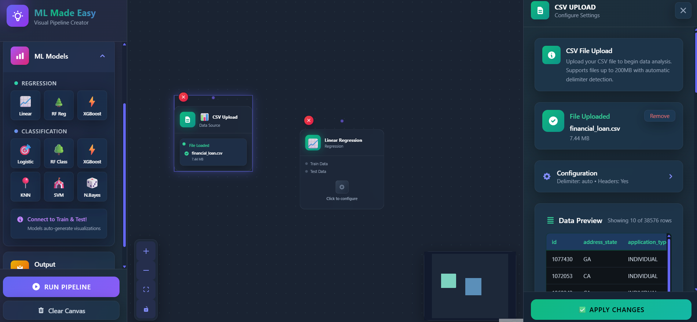
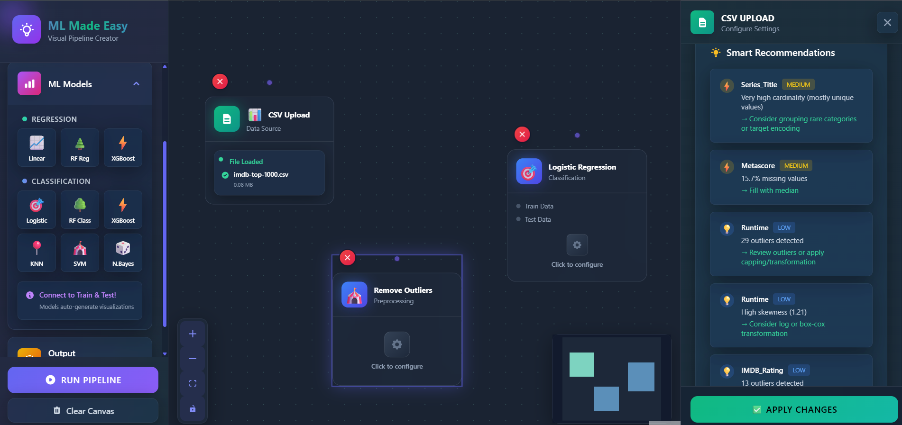
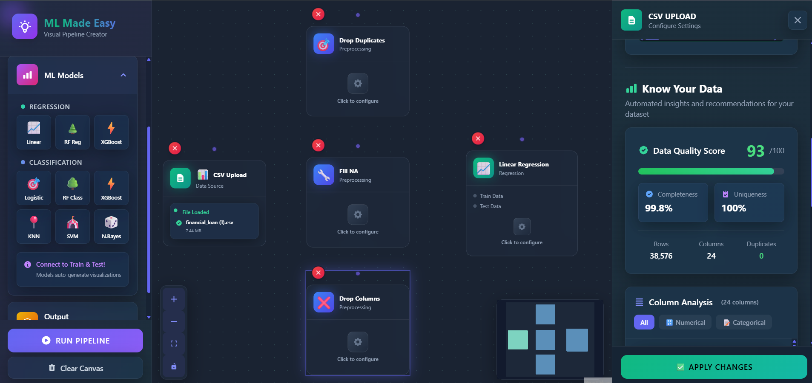
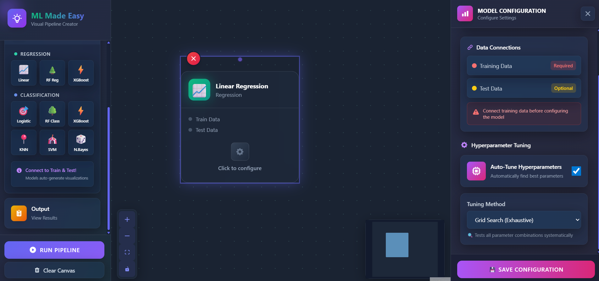

A visual, node-based ML pipeline builder — drag, connect, train. Upload your CSV, get instant data quality insights, build preprocessing pipelines, and train models. From data to model in under 6 minutes.
App Screenshots




MLMadeEasy is a no-code machine learning platform where you build ML pipelines the same way you'd draw a flowchart — by connecting nodes. Upload a CSV, and the platform instantly analyses your data quality, flags issues, and suggests fixes. Then drag preprocessing nodes, connect a model, hit train.
The goal is to eliminate the 60–80% of ML work that is boilerplate — the repetitive data cleaning, scaling, encoding, and splitting that consumes most of the time before any actual modelling begins.
Only 13% of ML projects make it to production. The bottleneck isn't algorithms, it's the grinding, error-prone data preparation work that precedes them.
Automated Data Quality Score
Instant 0–100 quality score based on completeness, uniqueness, and outlier analysis
Visual Node-Based Editor
Drag nodes from the sidebar, connect them on a canvas. ReactFlow-powered with smart connection validation.
Smart Recommendations
AI-powered suggestions flagged by severity — missing values, high cardinality, skewed distributions, outliers.
9 Preprocessing Nodes
Fill NA, drop duplicates, normalise, encode, remove outliers, feature selection, datetime extraction, and more.
12 ML Models
Linear, Random Forest, XGBoost, SVC, KNN, Naive Bayes — with manual and auto (Grid, Random, Bayesian) hyperparameter tuning.
Smart Train-Test Split
Configure target, features, and ignored columns visually. Auto-stratification for classification targets.
Column-Level Statistics
Mean, median, skewness, kurtosis, IQR-based outlier detection for numerical; cardinality for categorical.
Real-Time Validation
Connection rules enforced live — invalid edges rejected with clear error messages before you even click train.
Every pipeline follows the same logical flow — data in, transform, split, model, evaluate. Each stage is a node you configure independently.
Clean separation: the React frontend handles the visual canvas and all UI state. The Flask backend is a pure data API — it receives CSV files, runs Pandas analysis, and will run model training. No business logic bleeds across the boundary.